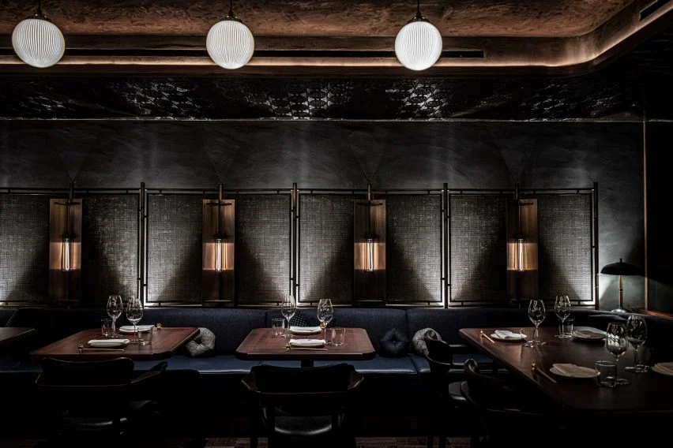

TAVERNA
OM OSS
Välkommen till Taverna, en anrik restaurang med över 40 års gastronomisk historia och en ny, spännande era som väntar! Tidigare hyllad för sitt italienska kök står Taverna redo att inviga sin nyöppning i början av det kommande året.
Vår passion är att skapa en autentisk BBQ-upplevelse, där varje måltid är en hyllning till rökiga smaker och traditionella tillagningsmetoder. Vårt kök är fyllt av en blandning av hemligheter och kärlek till konsten att grilla.
Oavsett om du älskar saftiga revben, långsamt tillagad pulled pork eller smakrik brisket, kommer du att uppleva äkta värme i varje tugga.
På Taverna handlar det inte bara om mat; det handlar om gemenskap, glädje och en smakresa genom BBQ-traditioner. Vi ser fram emot att välkomna dig till vårt bord och dela dessa smakupplevelser med dig.
Den nya atmosfären på Taverna är lika inbjudande som den delikata maten. Moderna detaljer smälter samman med rustika inslag för att skapa en avslappnad och trivsam stämning. Oavsett om du söker en intim familjemiddag eller en kväll i goda vänners lag kommer Taverna vara platsen för en smakfull upplevelse.
Så håll ögonen öppna för den storslagna nyöppningen i början av 2024!
